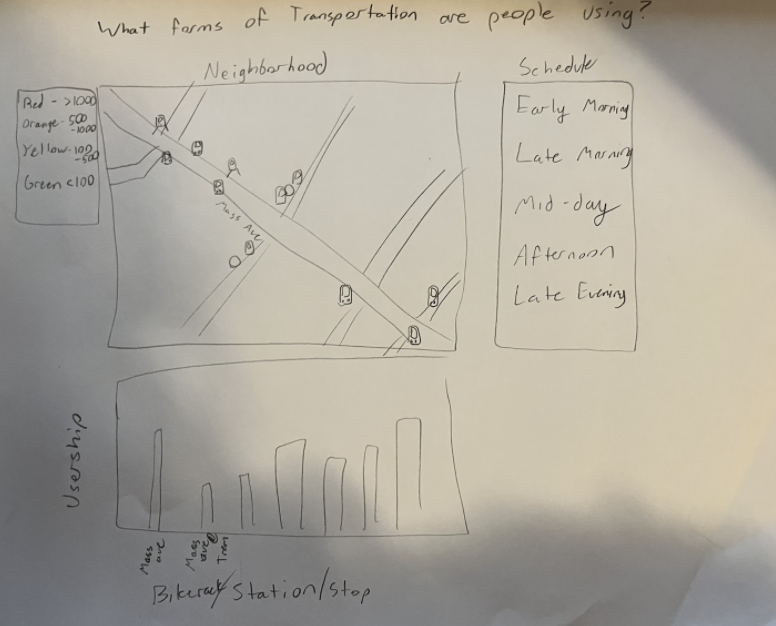
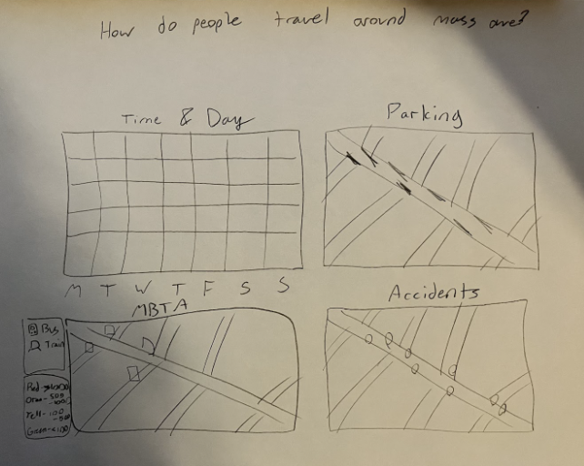
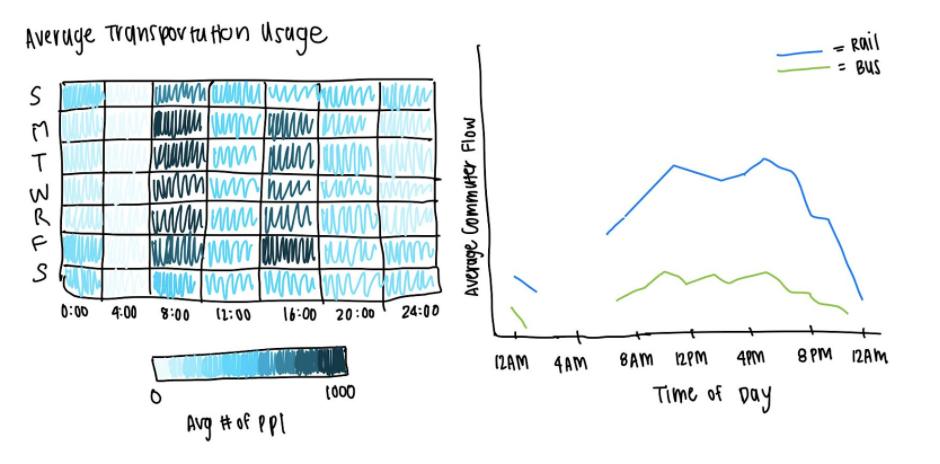
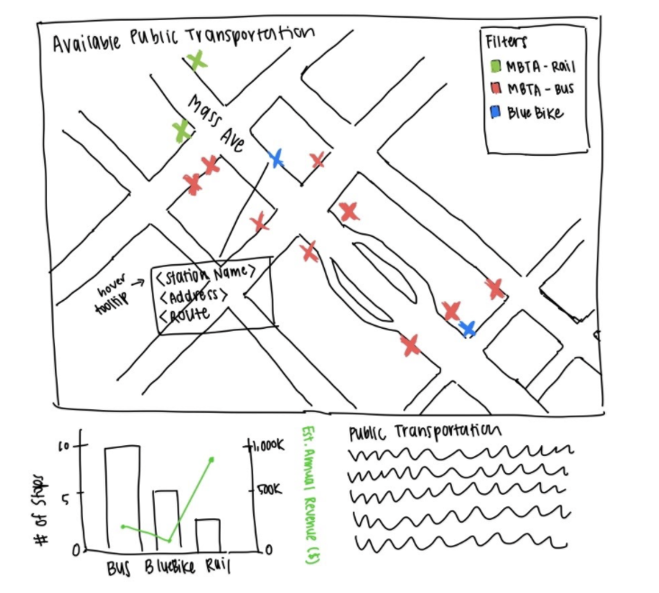
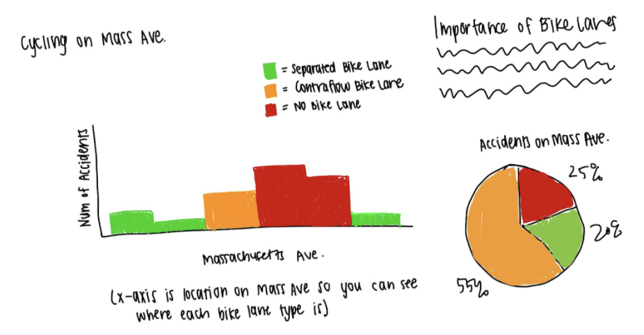
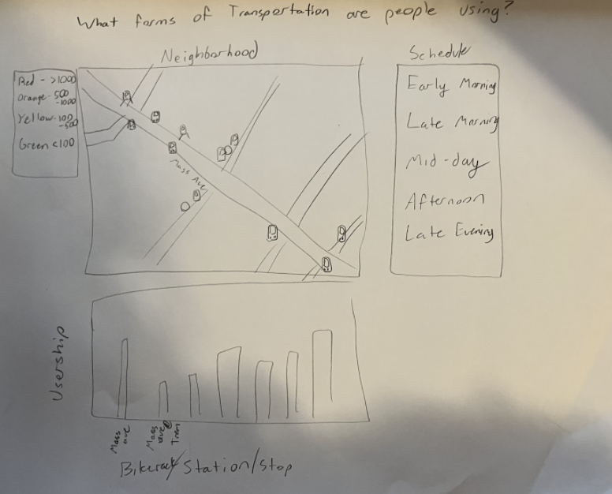
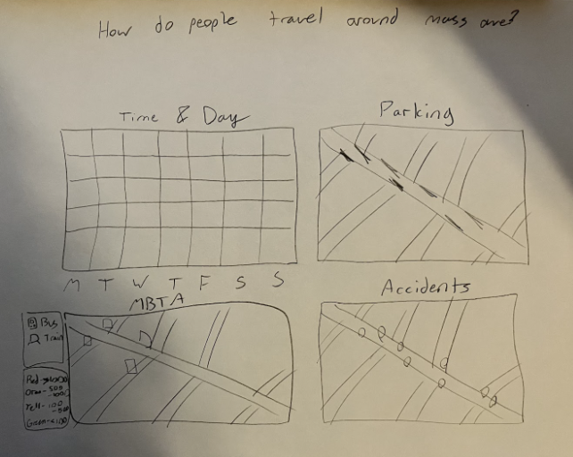
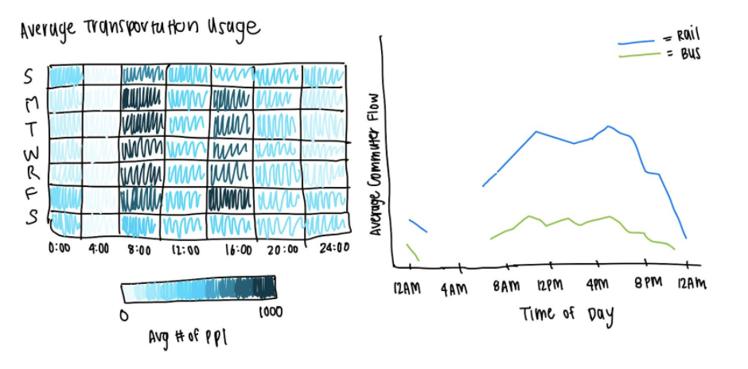
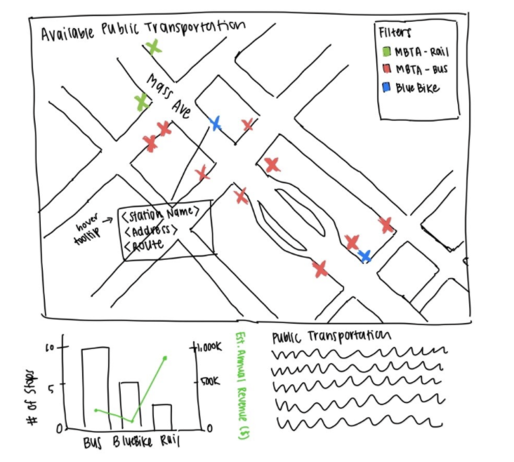
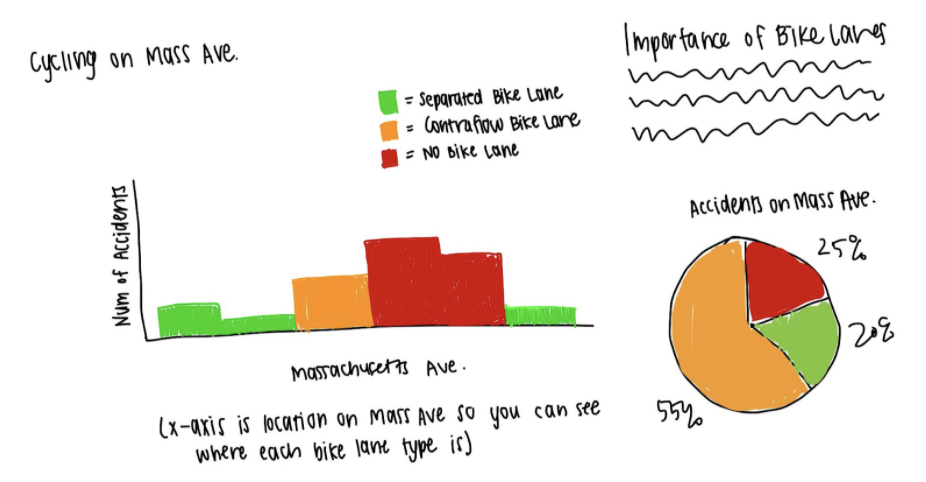

Design Process
We went through many iterations of sketches of our final design, as seen below. After individually sketching,
our group came together and identified a lot of overlap amongst our visualizations. We ultimately decided
on Sketch #3 as our final visualization. It focuses on rail and bus transportation usage near the Chester
Square neighborhood and the data that available is most complete for these plots.
This visualization answers many of our tasks, such as "What public transportation options are available?",
"When is the community the busiest?", and "When transportation options are most frequently used?".
 








